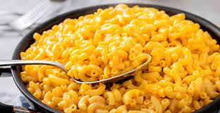

Macaroni and Cheese

Ingredients
Steps
- Add 2 cups of water to a pot and bring to a boil
- Once at roiling boil, add pasta and cook for 8-10 minutes
- At desired tenderess drain pasta and add cheese mix and 2 tbsp butter to pot, stir until incorporated
- Enjoy!